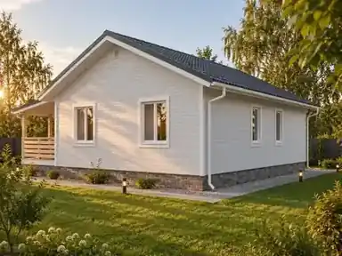

Следующая модель

Москва · Московская областьДома для постоянной жизни
Коллекция домов 2026
Дом, в котором
есть простор.
Проектируем и строим частные дома с понятной архитектурой, рациональными планировками и характером.
↓01 / Проекты
Выберите дом
под свой сценарий жизни.
Начинаем с готовой архитектурной основы и адаптируем её под участок, состав семьи и привычный ритм жизни.
01
Простор RS 8×8
Компактный двухэтажный дом для семьи с детьми.
- Площадь
- 90 м²
- Этажи
- 2
- Спальни
- 4
02
Простор RS 10×8
Одноэтажный дом с крытой террасой — всё необходимое на одном уровне.
- Площадь
- ≈ 68 м²
- Этажи
- 1
- Спальни
- 2

Скоро

02 / Подход
Не увеличиваем площадь ради цифры. Проектируем то, чем вы будете пользоваться каждый день.
Большая кухня-гостиная, нормальные спальни, хранение, технические помещения и понятная связь дома с участком — без пустых метров и декоративных решений ради картинки.
03 / В основе
Рациональная планировка
Каждый метр должен работать на реальный сценарий жизни семьи.
Понятная архитектура
Спокойные пропорции, долговечные решения и внешний вид, который не устаревает через сезон.
Адаптация к участку
Посадка дома, ориентация окон, вход и терраса уточняются с учётом конкретного участка.
04 / Компания
Корпорация РС
Строим частные дома в Москве и Московской области. На этом сайте собираем собственную линейку проектов «Простор» — от компактных семейных домов до более просторных одноэтажных решений.
2009год основания компании
Москва + МОосновной регион работы
05 / Обсудить домРасскажите,